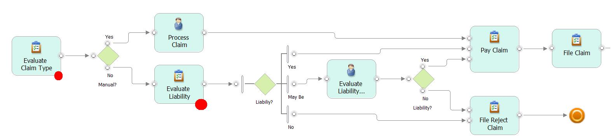

A Decision point represents an activity in a business process where decisions are
done. When looking at a task description it is important to search for mental thinking verb, most of the time there is
a set of knowledge to apply to execute this task, which leads to decision. This could be human knowledge or business
logic implementation in a software component. The type of decision will most likely be a reject or accept of the
business event or flag it for future processing downstream in the business process. The decision may also include some
computational expressions to assign value to attribute of the business transaction. Therefore to find decision point in
a business process or use case description start by searching for mental, action verb like analyze, check, validate,
evaluate, verify, assess, ...
In a BPMN process diagram a business process analyst and/ or a rule analyst can annotate the process to highlight
decision point in the process.

The search for decision point, attached to a business process description (done with use case or with BPMN does not
matter), helps to drive the rule analysis, and helps the business to focus at the business rule enforcement.
If the business team misses where the rule should be enforced, the team can spend months defining business
rules which IT does not understand where to deploy them. The decision point can help drive the discovery of the
business policies and rules, for an implementation point of view, as well as a way to organize the top down approach. A
decision point support multiple rules, and if implemented with a rule engine, the rules are packaged as rule set.
Also finding the decision points involves studying
• Which use cases/scenarios represent decisions - At what steps in the use case is a decision made?
• Which requirements constitute rich set of decisions?
• Which steps/cases/requirements represent significant complexity?
• Which steps/cases/requirements are most subject to change?
• Look for decision diamonds in the flow charts and activity diagrams, the gateway by itself route the data to the next
activity, but the activity before the gateway should be rich in decisions.
The documentation of the decision point can be done in table format.
|